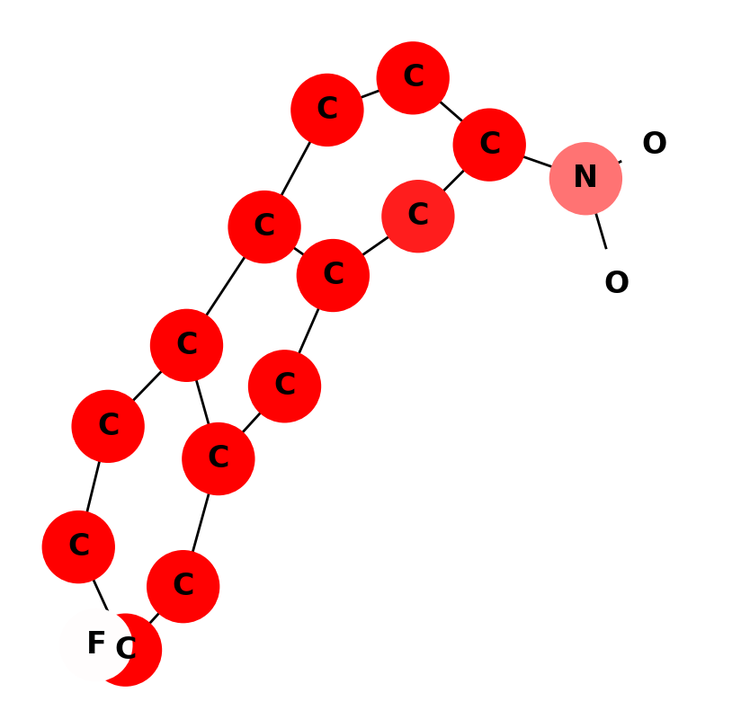
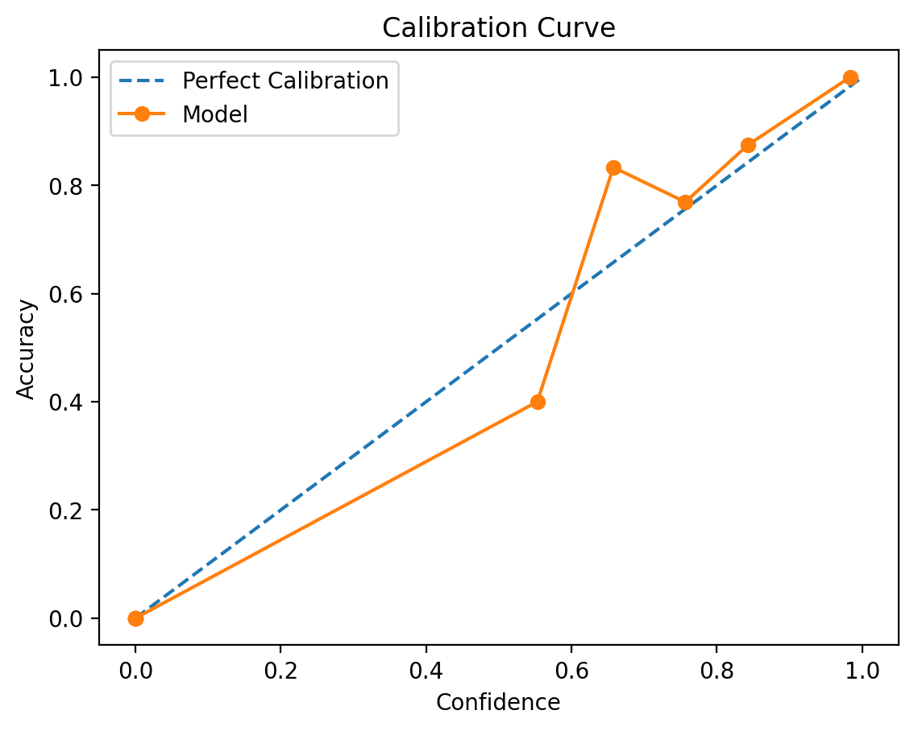
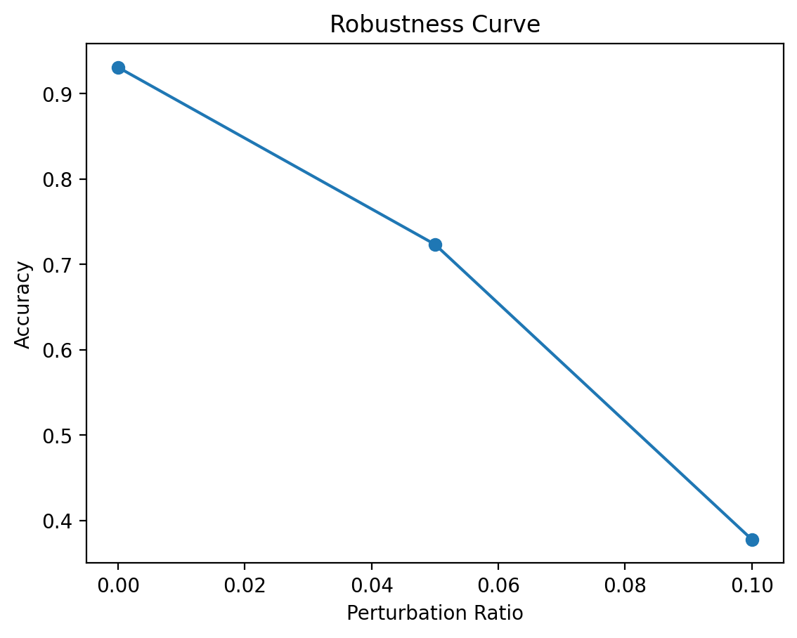
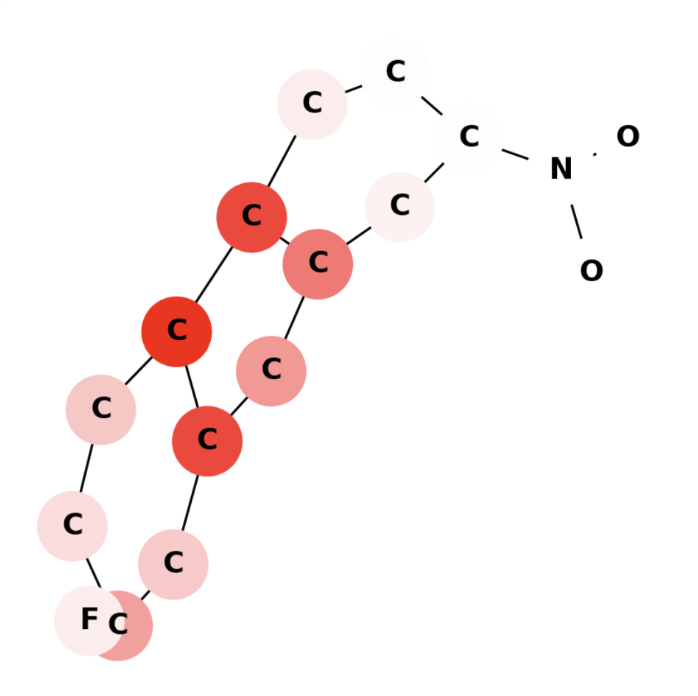

A technical case study on training a Graph Isomorphism Network (GIN) for the MUTAG dataset, then extending it with explainability, calibration, adversarial testing, and local subgraph analysis.
Most graph classification projects stop at accuracy. This one was extended into a broader model analysis system that asks more practical questions:
Major experimental extensions implemented
Cross-validation training pipeline
Observed Expected Calibration Error (ECE)
Accuracy drop under graph perturbation
Molecular mutagenicity prediction is naturally a graph learning problem. Molecules are not sequences or images — they are structured as atoms connected by bonds. This makes Graph Neural Networks a more appropriate modeling choice than flat tabular methods.
The MUTAG dataset contains molecular graphs labeled as mutagenic or non-mutagenic. Each graph contains:
A Graph Isomorphism Network (GIN) was used because it is one of the strongest architectures for graph classification and works well on smaller molecular datasets.
The project was extended into a broader graph model analysis system covering explainability, robustness, confidence reliability, and local structural reasoning.
Attempted SHAP-style atom attribution by wrapping graph inputs into a SHAP-compatible interface. This was useful for experimentation, but unstable in practice due to graph shape and topology constraints.
Tested model sensitivity to random edge perturbations at multiple magnitudes. Accuracy degradation was measured and visualized through a robustness curve.
Instead of forcing brittle formal LRP, practical graph-compatible approximations were implemented: Saliency Maps and Gradient × Input.
Prediction probabilities were evaluated using reliability analysis and Expected Calibration Error (ECE) to assess whether model confidence was trustworthy.
Local graph regions were masked to identify which atoms and structural neighborhoods most strongly influence prediction outcomes.
All major experiments were surfaced through a Streamlit interface with toggles for node importance, subgraph extraction, SHAP, saliency, LRP-like relevance, calibration, and robustness.




The strongest outcomes came from methods that aligned well with graph structure instead of forcing generic explainability tooling onto relational inputs.
The most reliable components were:
SHAP integration exposed the biggest engineering friction:
The project consistently showed that:
Each extension was evaluated not only by implementation success, but also by stability, interpretability, and practical usefulness.
| Criterion | Observation |
|---|---|
| Objective | Estimate atom-level contribution to mutagenicity prediction using SHAP-style explanations. |
| Approach | Wrapped graph input into a SHAP-compatible pipeline using node feature attribution. |
| What Worked | Basic SHAP integration, app toggle, partial score visualization, exploratory graph explanation flow. |
| What Failed | Shape mismatches, unstable outputs, graph-to-tabular incompatibility, occasional white/uninformative node maps. |
| Observed Outcome | Useful as an exploratory experiment, but not consistently reliable for graph-structured inputs. |
| Status | Partially Successful |
| Perturbation Level | Observed Accuracy | Interpretation |
|---|---|---|
| 0% | 0.931 | Strong baseline performance on unperturbed graphs. |
| 5% | 0.723/td> | Minor structural corruption causes moderate degradation. |
| 10% | 0.378 | Model becomes highly unreliable under stronger graph perturbation. |
| Key Insight | The model relies strongly on graph topology and is structurally brittle under heavier perturbation. | |
| Status | Successfully Implemented | |
| Method | Purpose | Observed Outcome | Status |
|---|---|---|---|
| Saliency Map | Highlight atoms the model is most sensitive to. | Stable, interpretable, and visually meaningful in most molecules. | Worked Well |
| Gradient × Input | Approximate atom-level relevance contribution (LRP-like). | Produced stronger and more usable attribution than raw gradients. | Worked Well |
| Formal LRP | Exact layer-wise relevance propagation for GNN internals. | Not implemented due to complexity of graph message passing and pooling operations. | Approximated |
| Key Insight | Gradient-based attribution proved more practical and stable than forcing full formal LRP or SHAP into the graph pipeline. | ||
| Metric | Observed Value | Interpretation |
|---|---|---|
| Expected Calibration Error (ECE) | 0.0498 | Confidence scores are reasonably aligned with actual correctness. |
| Calibration Curve | Near ideal diagonal | Model confidence is fairly trustworthy across bins. |
| What Worked | Reliability analysis, ECE computation, and calibration visualization integrated successfully into the app. | |
| What Was Left | Temperature scaling and fold-wise transfer calibration were not fully completed. | |
| Status | Successfully Implemented | |
| Criterion | Observation |
|---|---|
| Objective | Identify atoms / local graph regions most critical to prediction. |
| Approach | Mask / suppress important regions and observe local contribution through graph visualization. |
| What Worked | Minimal subgraph visualization, node highlighting, local structural interpretation. |
| Issue Encountered | Some oxygen atoms visually appeared as carbon atoms due to node-label mismatch in minimal subgraph mode. |
| Fix Applied | Preserved original graph node labels and restricted masking logic to visualization-only importance fading. |
| Observed Outcome | One of the strongest and most intuitive explanation methods in the project. |
| Status | Successfully Implemented |
The project became significantly more valuable once the focus shifted from pure accuracy to trust, inspectability, and failure analysis.
Several next steps could turn this from a strong experimental prototype into a more research-grade or production-ready graph ML system.
The real value of this project was not just in making a model classify molecular graphs correctly. It was in building a system that could be questioned, visualized, stress-tested, and interpreted.